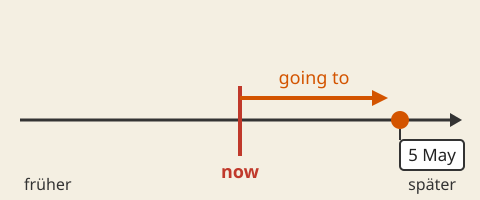

Was du vorhast: going to
Mit einem KI-Tutor lernen
Ein KI-Tutor erklärt dir diese Seite und hilft dir bei den Aufgaben. Wähl deinen Assistenten:
Mit Claude öffnen Mit ChatGPT öffnen Mit Mistral Vibe öffnen
Du nutzt dein eigenes Konto beim Anbieter. Der Assistent ist kein Angebot von lernapps.net: lernapps liefert nur Inhalte und Aufgaben. Die Wahl gilt für alle Seiten, nur auf diesem Gerät.
Peters Plan für den 5. Mai

Von links: Sophie (Zöpfe), Ellie (roter Pferdeschwanz), Amir (Brille) und Peter (gelbe Jacke). Peter spricht.
Quelle: eigene Zeichnung. Lizenz: CC-BY-4.0.Peter hat am 5. Mai Geburtstag. Er erzählt der Klasse: „I am going to have a party.“ Party heißt Feier, have a party heißt eine Feier machen.
Aufgabe
Lösung
Schon vorher. Er hat es sich vorgenommen. richtige Antwort
I am going to heißt „ich habe vor“. Der Plan ist schon da, auch wenn die Feier noch nicht begonnen hat.
Erst in diesem Moment, beim Sprechen.
Wer erst beim Sprechen entscheidet, nimmt will. Peter sagt aber, was er sich vorgenommen hat.
Die Feier war schon gestern.
Gestern heißt yesterday. In Peters Satz ist die Feier noch nicht vorbei.
Mit going to sagst du, was du dir vorgenommen hast.
Das kannst du danach: Du sagst auf Englisch, was du vorhast oder was nach einem Anzeichen bald passiert. Und du bildest going to mit am, is und are.
Ein Pfeil, der schon jetzt beginnt
Ein Plan ist schon da, bevor etwas passiert: im Kopf, auf dem Papier, im Kalender. Darum beginnt das Zeichen schon bei now. Ein Pfeil läuft von now nach rechts bis zum Termin. Das ist going to.

Der Pfeil beginnt bei now. Er zeigt auf den Tag, der geplant ist.
Quelle: eigene Zeichnung. Lizenz: CC-BY-4.0.Auch ein Anzeichen, das du jetzt siehst, zeigt nach vorn. Sophie schaut aus dem Fenster und sagt: „Look at the clouds! It is going to rain.“ Clouds sind Wolken, look at heißt schau dir an.
Die Bau-Karte heißt be + going to + Verb. Das be kennst du schon (am, is, are). Das Verb bleibt in der Grundform.
| Person | Form | Beispiel |
|---|---|---|
| I | am going to play | I am going to play football. |
| you | are going to play | You are going to play football. |
| he / she / it | is going to play | Peter is going to play football. |
| we / you / they | are going to play | They are going to play football. |
Merke
Das be darfst du nicht vergessen. Es heißt Peter is going to play, nicht Peter going to play. Nach going to steht das Verb ohne s und ohne weiteres to.
| Eintrag | Bedeutung |
|---|---|
| Peter · 5 May | Peters Geburtstag |
| Ellie · 10 July | Ellies Geburtstag |
| Amir · 12 October | Amirs Geburtstag |
| Sophie · 14 October | Sophies Geburtstag |
| on 10 July | am 10. Juli |
| fall | fallen |
Übung
Aufgabe
Wähle die richtige Form von be.
- Peter hat vor, Amir einzuladen. → Peter … going to invite Amir.
- Ich habe vor, einen Film anzuschauen. → I … going to watch a film.
- Wir haben vor, Peter zu besuchen. → We … going to visit Peter.
- Ellie hat vor, ein Buch zu lesen. → Ellie … going to read a book.
Lösung
- Peter is going to invite Amir.
- I am going to watch a film.
- We are going to visit Peter.
- Ellie is going to read a book.
Aufgabe
Ergänze die Tabelle für das Verb eat.
| Person | Form |
|---|---|
| I | … going to eat |
| you | … going to eat |
| he / she / it | … going to eat |
| we / you / they | … going to eat |
Lösung
- I · am going to eat
- you · are going to eat
- he / she / it · is going to eat
- we / you / they · are going to eat
Aufgabe
Lösung
Richtige Antwort: Peter steht auf einem Stuhl, und der Stuhl wackelt. – He is going to fall.; Peter hat eine Eintrittskarte für einen Film. – He is going to watch a film.; Ellie hat die Gäste schon ausgesucht. – She is going to invite Amir.
Wer einen Plan hat oder ein Anzeichen sieht, sagt mit going to, was bald passiert. Der Satz mit every Saturday erzählt von einer Gewohnheit.
Aufgabe
Schreibe den ganzen Satz mit going to.
- Peter · have · a party
- Ellie · invite · Amir
- I · read · a story
- they · visit · Peter
Lösung
- Peter is going to have a party.
- Ellie is going to invite Amir.
- I am going to read a story.
- They are going to visit Peter.
Aufgabe
In jedem Satz steckt ein Fehler. Schreibe den Satz richtig.
- Sophie going to visit Peter.
- Amir and Peter is going to eat a pizza.
Lösung
- Sophie is going to visit Peter.
- Amir and Peter are going to eat a pizza.
Aufgabe
Lösung
Ein Pfeil, der bei now beginnt und nach rechts zeigt. richtige Antwort
Der Plan steht schon jetzt. Darum beginnt der Pfeil bei now.
Ein einzelner Punkt rechts von now, ohne Pfeil.
Das ist das Zeichen für will. Dort hat noch nichts begonnen. Peter hat sich die Party schon vorgenommen.
Eine Punktreihe links und rechts von now.
Eine Punktreihe ist das Zeichen für Gewohnheiten. Peters Feier ist ein einziger Termin.
Going to hat als Zeichen einen Pfeil, der schon bei now beginnt.
Aufgabe
Hör zu und schreibe, was du hörst.
- KI
- KI
- KI
Lösung
- We are going to wash the car.
- Peter is going to look at the ticket.
- We are going to dance at the party.
Selbst sagen und schreiben
Aufgabe
Hör zu, sprich nach und nimm dich auf. Vergleiche dann mit dem Original.
Tipp
Hör den Satz zuerst. Sprich dann langsam nach. Going to sprichst du schnell und leise, die wichtigen Wörter betonst du.
- Ellie is going to be twelve in July.KI
- I am going to buy a new bag.KI
- Ellie and Sophie are going to swim after lunch.KI
Zum Aufnehmen braucht diese Aufgabe JavaScript. Die Beispiele kannst du auch ohne anhören.
Lösung
- Ellie is going to be twelve in July.
- I am going to buy a new bag.
- Ellie and Sophie are going to swim after lunch.
Offene Aufgabe
Sophie hängt eine Karte mit einem Pfeil an den Zeitstrahl. Wähle eine Person aus dem Schulkalender und schreibe zwei Sätze mit going to über ihren Geburtstag.
Eine gute Antwort enthält:
Lösung
Ellie is going to have a party on 10 July. She is going to invite Amir.
Wie es weitergeht
Am Zeitstrahl hängen jetzt zwei Zeichen rechts von now: Amirs Punkt und Peters Pfeil. Ellie hat am 10. Juli Geburtstag und erzählt ihre Pläne. Amir hört zu und hat gleich eine Idee. Auf der nächsten Seite entscheidest du, wann du will und wann du going to nimmst.